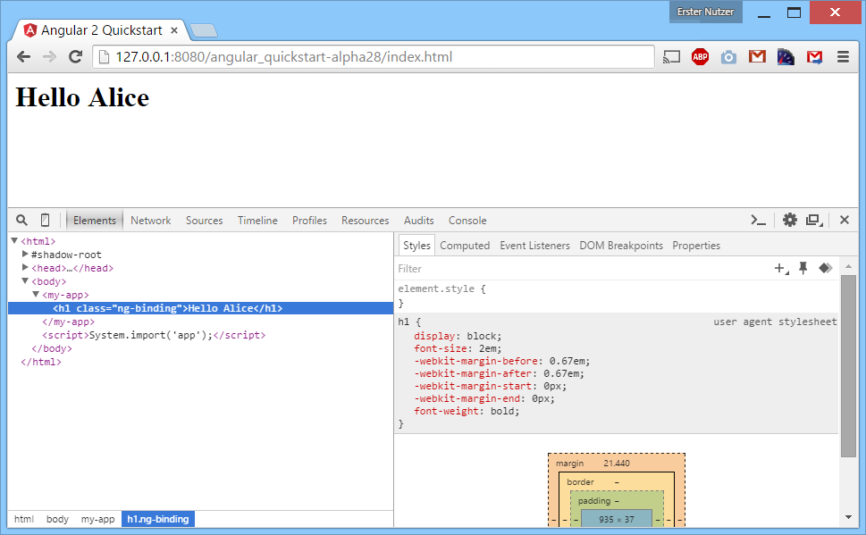

Angular 2.0 und modularer Code
Die Vorschauversion von AngularJS gibt einen Ausblick auf die Entwicklung mit TypeScript und ein solides Management von Abhängigkeiten.
Inhalt
- Einleitung
- Hello World
- ES6 Module Loader Polyfill
- Traceur & Traceur runtime
- jspm
- SystemJS
- Angular 2.0 mit Gulp bauen
- Angular 2.0 mit jspm laden
- Fazit
1. Einleitung
Angular 2.0 wird in naher Zukunft fertig gestellt sein. Es gibt es bereits regelmäßige Vorabversionen für interessierte Entwickler. Das Angular-Team hat sich entschieden, alte Zöpfe rigoros abzuschneiden und ein komplett überarbeitetes Framework zu entwickeln. Die neue Version bricht mit bestehenden Konzepten - was für viel Aufregung gesorgt hat. Die Template-Syntax ist neu und man setzt nun Komponenten statt Controller ein. Auch der Einsatz von TypeScript rüttelt am einher gebrachten. In diesem Artikel soll auf eine weitere maßgebliche Änderung eingegangen werden. Diese betrifft das Laden von JavaScript-Dateien. Weitere Artikel zu den Neuerungen in Angular 2.0 folgen in den kommenden Ausgaben der web & mobile developer.
2. Hello World
Hinweis Das hier gezeigt Beispiel nutzt eine Vorschauversion von Angular 2.0. Der gezeigte Code muss für spätere Versionen wahrscheinlich angepasst werden.
Auf der neuen Website unter angular.io findet man einen kurzen 5 Minuten Schnellstart in das neue Framework. In dem Quickstart wird unter anderem beschrieben, wie man eine erste Komponente erstellt. Ebenso wird der Transpiler TypeScript vorgestellt, welcher die Datei app.ts in eine JavaScript-Datei Namens app.js umwandelt. Listing 1a und 1b zeigen das Schnellstart-Beispiel von Angular 2.0. Es wurden 4 Zeilen markiert, welche im Folgenden genauer betrachtet werden.
<html>
<head>
<title>Angular 2.0 Quickstart</title>
<!-- Zeile 1 --> <script src="https://github.jspm.io/jmcriffey/bower-traceur-runtime@0.0.87/traceur-runtime.js"></script>
<!-- Zeile 2 --> <script src="https://jspm.io/system@0.16.js"></script>
<!-- Zeile 3 --> <script src="https://code.angularjs.org/2.0.0-alpha.28/angular2.dev.js"></script>
</head>
<body>
<my-app></my-app>
<!-- Zeile 4 --> <script>System.import('app');</script>
</body>
</html>
Listing 1a: index.html - Quickstart mit Markierung der relevanten Zeilen
import {Component, View, bootstrap} from 'angular2/angular2';
@Component({
selector: 'my-app'
})
@View({
template: '<h1>Hello {{ name }}</h1>'
})
class MyAppComponent {
name: string;
constructor() {
this.name = 'Alice';
}
}
bootstrap(MyAppComponent);
Listing 1b: app.ts - Eine simple Angular 2.0 Komponente
Das Beispiel baut auf einer Reihe von Frameworks auf, um diese Datei zu laden und auszuführen. Die eigentliche Funktion dieses Beispiels erschließt sich aber dennoch schnell. Das DOM-Element <my-app> wird mit einer eine Überschrift ergänzt, welche den Text "Hello Alice" trägt.

Screenshot: Der Output im Browser
Hinter diesen vier markierten Zeilen verbirgt sich ein Strauß an Technologien - unter anderem Traceur, jspm, SystemJS, TypeSript und natürlich Angular 2.0. Durch die Auswahl dieser Frameworks ist es möglich, bereits mit heutigen Browsern eine Anwendung auf Grundlage von ECMAScript 6 zu entwickeln. Die verwendeten Tools sollen nun betrachtet werden. Alle gezeigten Kommandozeilen-Befehle setzen voraus, dass Node.js installiert ist.
3. ES6 Module Loader Polyfill
In der Webwelt steht der Begriff "Poylfill" für eine Software, welche fehlende JavaScript-Funktionalitäten im Browser zur Verfügung stellt. In der Vergangenheit ging es bei Polyfills häufig darum, standardisierte Funkionen in alten Internet-Explorer Versionen nachzurüsten. Es können aber auch mithilfe von Polyfills Funktionen hinzugefügt werden, die gerade erst definiert wurden und daher noch von keinem Browser vollständig unterstützt werden.
Der "ES6 Module Loader Polyfill" ist ein bekanntes Tool für die Entwicklung von ECMAScript 6 Anwendungen.
Unter anderem liefert er:
- einen asynchronen Modul-Loader für ES6-Module entsprechend der ES6-Spezifikation (
System.import). - die Möglichkeit, einen so genannten Transpiler wie Traceur, Babel oder TypeScript direkt im Browser zu verwenden.
- das spezielle Script Tag
<script type="module">in dem man ES6 Code-schreiben kann.
Folgendes ES6 Modul:
export class Test {
constructor() {
document.body.innerText = 'This is a Constructor!';
}
}
Listing 2a: es6_module.js - Eine Klasse in ECMAScript 6
...kann mithilfe des ES6 Module Loader Polyfill geladen und sofort ausgeführt werden:
<script src="https://github.jspm.io/jmcriffey/bower-traceur@0.0.88/traceur.js"></script>
<script src="https://jspm.io/es6-module-loader@0.16.6.js"></script>
<script>
System.import('es6_module').then(function(module) {
var test = new module.Test();
});
</script>
Listing 2b: example_es6.html - Verwendung des "ES6 Module Loader Polyfill"
Für die Verwendung von ES6 Features (wie z.B. einer Klasse) benötigt man einen Transpiler, welcher ECMAScript 6 in ECMAScript 5 umwandelt, damit der Code in jedem Browser ausführbar ist. Der Polyfill verwendet standardmäßig den Transpiler Traceur, welcher von Google entwickelt wird. Die Umwandlung des Quellcodes geschieht direkt im Browser, sogar eine "SourceMap" steht für ein komfortables Debugging zur Verfügung. Das Script traceur.js wird automatisch vom Polyfill nachgeladen, sofern es nicht bereits vorhanden ist. Aufgrund der verwendeten Ordnerstruktur würde es im vorliegenden Fall zu einem Fehler 404 (Not Found) kommen. Mit dem ersten Script-Tag wird dem Fehler 404 entgegen gewirkt, indem die benötigte Datei vorab eingebunden wird und das Nachladen nicht mehr notwendig ist.
Möchte man die ES6 Syntax nicht nur in geladenen Dateien, sondern auch in Script-Tags verwenden, so ist dies mit heutigen Browsern nicht direkt möglich. Der Browser würde den Code sofort ausführen und die unbekannten Schlüsselwörter mit einer Exception bemängeln. Mithilfe des Script-Tags <script type="module"> kann man hingegen die ES6 Features sicher verwenden, da der Browser den Inhalt aufgrund des unbekannten Typs ignoriert. Das Transpiling geschieht dann erneut zur Laufzeit. In Listing 2c sieht man, wie die speziellen Script-Tags verwendet werden.
<script src="https://github.jspm.io/jmcriffey/bower-traceur@0.0.88/traceur.js"></script>
<script src="https://jspm.io/es6-module-loader@0.16.6.js"></script>
<script type="module">
import {Test} from 'es6_module';
var test = new Test();
</script>
Listing 2c: example_es6_import.html - Verwendung des Schlüsselworts "import" mithilfe des Polyfills
4. Traceur & Traceur runtime
Das Transpiling von ES6 zur Laufzeit ist im produktiven Einsatz nicht sehr effizient. Es bietet sich an, den Code zwar in ES6 zu entwickeln, aber die Umwandlung stets vorab durchzuführen. Zu Traceur gehört ein Kommandozeilen-Script, welches das Transpiling durchführt. Folgende Befehle erzeugen eine Datei mit dem Namen es6_module.compiled.js:
npm install -g traceur
traceur --sourcemap --out es6_module.transpiled.js es6_module.js
Um die generierte Datei verwenden zu können, muss eine passende Datei Namens traceur-runtime.js. eingefügt werden. Der Sinn dieser Traceur-Runtime besteht vorwiegend darin, mehrfach benötigten Code in den einzelnen transpilierten Dateien zu vermeiden, was später Traffic spart. In dieser Datei befinden sich der Code für das häufig verwendete globale Object $traceurRuntime sowie eine Reihe von Polyfills. Ohne die Runtime ist der generierte ES5-Code nicht lauffähig.
<script src="https://github.jspm.io/jmcriffey/bower-traceur-runtime@0.0.88/traceur-runtime.js"></script>
<script src="es6_module.transpiled.js"></script>
<script>
var Test = System.get("es6_module.js").Test;
var test = new Test();
</script>
Listing 3: example_traceur-runtime.html - Die Traceur-Runtime ermöglicht die Ausführung vom transpiliertem Code
Damit wäre Zeile 1 aus dem 5-Minuten Quickstart geklärt. Die hier verwendete Version von Angular 2.0 wurde mit Traceur erstellt und benötigt schlicht die Traceur-Runtime um fehlerfrei zu funktionieren (Fehler: "$traceurRuntime is undefined").
5. jspm
jspm ist ein Paketmanager, welcher indirekt in Zeile 2 verwendet wird. Die Verwendung von jspm erleichtert die Einbindung von Paketen enorm. Jene Pakete können aus der npm-registry oder direkt aus Github Repositories stammen. Im Falle eines Github-Repositoriums werden fertige Versionen mittels Git-Tags markiert. Dies entspricht dem Vorgehen von bower. Hervorzuheben ist die Verwendung einer flachen Ordnerstruktur, was ebenso dem Ansatz von Bower entspricht. Jspm ist für die Verwendung mittels SystemJS ausgelegt.
Mit folgendem Befehlen lässt sich beispielsweise die aktuellste Version jQuery von dessen Github-Repository herunter zu laden:
npm install -g jspm@0.15.7
jspm install jquery
Wird jspm install auf ein leeres Verzeichnis angewendet, so erscheint der Assistent welcher auch durch jspm init gestartet werden kann. Obwohl man jquery angefordert hat, wird zusätzlich SystemJS sowie dessen Abhängigkeiten herunter geladen. Es wird durch jspm init eine Datei namens package.json angelegt. Unter dem Prefix "jspm" können alle gewünschten Abhängigkeiten eingetragen werden. Wie bei npm lassen sich per jspm install bzw. jspm update später erneut alle Dateien herunter laden. Weiterhin wird eine Datei names config.js angelegt, über die unter anderem die zu verwendenden Pfade konfiguriert werden.

Screenshot: jspm führt durch die Installation
Alle bislang gezeigten Beispiele verwendeten das CDN (Content Delivery Network) von jspm.io. Ein produktiver Einsatz des CDN ist jedoch noch nicht empfehlenswert, da das CDN als experimentell gilt. Während der Arbeit an diesem Artikel fiel das CDN mehrfach aus! Verwenden Sie stattdessen das jspm Kommandozeilen-Tool "jspm-cli", um alle Abhängigkeiten herunter zu laden und die Dateien selbst zu hosten. Das Standardverzeichnis des Kommandozeilen-Tools lautet 'jspm_packages'. Das nächste Quelltext-Beispiel wird auf Dateien basieren, welche per JSPM herunter geladen wurden.
6. SystemJS
In Zeile 2 und 4 sieht man die Verwendung von SystemJS.
SystemJS ist ein "universaler Module-Loader" und integriert diverse existierende Modul-Formate (ES6, AMD, CommonJS und globale Objekte). Durch die Integration von CommonJS können Module verwendet werden, welche ursprünglich für Browserify gedacht waren. Ebenso lassen sich AMD-Module verwenden, welche üblicherweise über require.js geladen werden. Zusätzlich werden auch direkt ES6-Module mittels des bereits vorgestellten ES6 Module Loader Polyfills unterstützt.
Ein typischer Anwendungsfall von SystemJS wird im Listing 4 gezeigt. Das zuvor herunter geladene Framework jQuery, welches als AMD-Modul verwendbar ist, wird in diesem Beispiel eingebunden.
<script src='/jspm_packages/system.js'></script>
<script src='/config.js'></script>
<script>
System.import('jquery').then(function($) {
$("body").text('Hello World!');
});
</script>
Listing 4: example_systemjs_jquery.html - SystemJS lädt jQuery
SystemJS lädt in dieser Version immer auch den bereits vorgestellten "ES6 Module Loader Polyfill" (es6-module-loader.js) nach, so dass dessen gesamte Funktionalitäten stets zur Verfügung stehen.
7. Angular 2.0 mit Gulp bauen
In Zeile 3 sieht man ein vorbereitetes Bundle mit dem Namen angular2.dev.js. Diese Datei wollen wir nun selbst erzeugen. Dies ist vergleichsweise einfach, das die diversen Schritte mittels des Automatisierungstools Gulp durchgeführt werden. Nachdem Angular 2.0 vom Github-Repository herunter geladen wurde, muss Gulp zunächst installiert und dann ausgeführt werden.
git clone https://github.com/angular/angular.git
npm install
npm install -g gulp
gulp build
Es werden eine Reihe von Dateien im Ordner 'dist' erzeugt. Die bekannte Datei angular2.dev.js befindet sich im Ordner dist/js/bundle. Den Inhalt dieses Ordners veröffentlicht das Angular-Team bei jeder neuen Alpha-Version auf code.angularjs.org. Ganz konkret handelt es sich bei angular2.dev.js um ein ES5-kompatibles Bundle, welches mit dem SystemJS Build Tool erstellt wurde. Das Build-Tool verwendet wiederum Traceur, was die die Notwendigkeit für die Runtime erklärt. Es ist anzunehmen, dass in einer zukünftigen Version auf Traceur gänzlich verzichtet wird. Dies würde die Verwendung von Angular 2.0 entsprechend vereinfachen.
Wem die sperate Einbindung der Traceur-Runtime nicht zusagt, der sollte die Datei angular2.sfx.dev.js verwenden. Hierbei handelt es sich zwar ebenso um ein ES5-kompatibles Bundle, die Datei wurde aber zusätzlich als ein so genanntes [Self-Executing bundle][11] erstellt. In dieser Datei ist die Traceur Runtime bereits enthalten und das manuelle Einbinden entfällt. Ebenso wird Angular in dieser Variante über das globale Objekt window.ng verfügbar gemacht. Damit spricht man Entwickler an, die weder SystemJS noch den "ES6 Module Loader Polyfill" verwenden wollen. Im Listing 5 sehen Sie ein Beispiel für die Verwendung von Angular 2.0 mit reinem ES5-JavaScript unter Verwendung einer Fluent-API, welche speziell für ES5-Nutzer gedacht ist.
<html>
<head>
<title>Angular 2 Quickstart (ES5)</title>
<script src="https://code.angularjs.org/2.0.0-alpha.38/angular2.sfx.dev.js"></script>
<script>
var app = ng
.Component({
selector: 'my-app'
})
.View({
template: '<h1>Hello {{ name }}</h1>'
})
.Class({
constructor: function () {
this.name = "Alice";
}
});
document.addEventListener('DOMContentLoaded', function() {
ng.bootstrap(app);
});
</script>
</head>
<body>
<my-app></my-app>
</body>
</html>
Listing 5: example_es5.html - Einsatz der alternativen API für ECMAScript 5
Auch die anderen Fragmente aus dem Build findet man im NPM-Paket von Angular 2.0 wieder:
| Build-Verzeichnis | Verzeichnis im NPM-Paket | JavaScript-Version | Modul-Format | Erklärung |
|---|---|---|---|---|
| dist/js/bundle/angular2.sfx.dev.js | bundles/angular2.sfx.dev.js | ECMAScript 5 | Globales Objekt (window.ng = ng) |
Transpiliertes Bundle mit globalem Objekt, Verfügbar auf code.angularjs.org |
| dist/js/bundle/angular2.dev.js | bundles/angular2.dev.js | ECMAScript 5 | SystemJS (System.register()) |
Transpiliertes Bundle für SystemJS, Verfügbar auf code.angularjs.org |
| dist/js/cjs/angular2 | ./ (root folder) | ECMAScript 5 | CommonJS (exports.XXX = XXX) |
Einzelne Dateien, verwendbar mit Browserify, Wird im nächsten Abschnitt (7. Angular 2.0 mit jspm laden) verwendet. |
| dist/js/dev/es6/angular2 | es6/dev | ECMAScript 6 | ES6 (export * from XXX) |
Einzelne Dateien mit Prüfungen zur Laufzeit (run-time type assertion library) |
| dist/js/prod/es6/angular2 | es6/prod | ECMAScript 6 | ES6 (export * from XXX) |
Einzelne Dateien ohne Prüfungen zur Laufzeit |
Tabelle: Die wichtigsten Dateien im NPM-Paket von Angular 2.0
8. Angular 2.0 mit jspm laden
Mit jspm und SystemJS gibt es einen komfortablen Weg, stets mit der neuesten Version von Angular zu arbeiten. Durch jspm kann man regelmäßig die aktuelle Version von Angular 2.0 und seinen Abhängigkeiten beziehen. SystemJS wiederum lädt alle Dateien asynchron im Browser. Man kann jedoch noch einen Schritt weiter gehen! Im Schnellstart von Angular 2.0 wird TypeScript-Code über die Kommandozeile in JavaScript umgewandelt. Das funktioniert zwar tadellos, aber gerade während der Entwicklung bietet es sich an, TypeScript direkt im Browser zu transpilieren.
Das jQuery-Beispiel basierte noch auf dem 0.15.x-Zweig von jspm. Für das folgende Beispiel muss hingegen die aktuellste Version von jspm verwendet werden (aktuell 0.16.11). Mit den Versionen 0.16.x von jspm erhält man eine entsprechend neue Version von SystemJS (aktuell SystemJS 0.18.x). Ab SystemJS 0.1.7 gibt es wichtige Änderungen, durch die das TypeScript-Szenario Beispiel reibungslos funktioniert. In der neuesten Version ist der ES6 Module Loader Polyfill (es6-module-loader.js) nicht mehr notwendig. Es wird stattdessen direkt TypeScript unterstützt.
npm install -g jspm@0.16.11
jspm install typescript
jspm install angular2@2.0.0-alpha.38
jspm install reflect-metadata zone.js es6-shim npm:@reactivex/rxjs
Die automatisch erstelle Datei config.js muss noch ein wenig angepasst werden (siehe Listing 6a), damit TypeScript mit den korrekten Einstellungen verwendet wird. Angular 2.0 hat zudem weitere Abhängigkeiten, welche bekannt gemacht werden müssen. Dies sind die zuvor installierten Frameworks zone.js sowie ReactiveX und die ebenso notwendigen Polyfills für Metadata-Reflection sowie für fehlende ES6-Features.
System.config({
baseURL: "/",
defaultJSExtensions: true,
transpiler: "typescript",
typescriptOptions: {
"module": "commonjs",
"emitDecoratorMetadata": true
},
meta: {
"angular2/angular2": {
"deps": ["reflect-metadata", "zone.js", "es6-shim", "@reactivex/rxjs"]
}
},
/* [...] weitere Einstellungen */
});
Listing 6a: config.js - Die notwendigen Anpassungen an die Konfigurations-Datei
Die TypeScript-Datei aus dem 5 Min Quickstart kann unverändert wiederverwendet werden (siehe erneute Listing 1b). Die Besonderheit bei der Verwendung von SystemJS bzw. jspm ist die Tatsache, dass man nicht mehr Angular per Script-Tag eingefügt werden muss. Sofern alle Pfade korrekt konfiguriert sind, übernimmt SystemJS von nun an die Bereitstellung von Abhängigkeiten im Code. Dazu gehört natürlich auch das Angular-Framework mit seinen weiteren Abhängigkeiten. Dies hält den eigenen Code entsprechend sauber und übersichtlich. Im Listing 6b sehen Sie ein optimiertes Schnellstart-Beispiel, welches nun voll auf das modulare Nachladen von JavaScript-Code setzt.
<!DOCTYPE html>
<html>
<head>
<title>Angular 2 Quickstart (jspm / SystemJS / TypeScript)</title>
<script src='/jspm_packages/system.js'></script>
<script src="/config.js"></script>
</head>
<body>
<my-app></my-app>
<script>
System.import('./app.ts!typescript');
</script>
</body>
</html>
Listing 6b: example_angular_jspm.html - Mittels SystemJS und jspm wird TypeScript direkt im Browser geladen und ausgeführt
9. Fazit
Verglichen mit der Version 1 hat sich bei AngularJS hinsichtlich der Modularität vieles zum Positiven entwickelt. Angular1 verwendete lediglich ein globales Objekt, so dass man die Qual der Wahl zwischen den Modulformaten AMD und CommonJS hatte. Man war gezwungen, AngularJS mittels "Shims" in das gewählte Format zu pressen. Nun legt sich Angular 2.0 fest, indem es auf ECMAScript 6 Module setzt. Diese wiederum lassen sich auch als CommonJS Module abbilden, so dass auch ECMAScript 5 Entwickler keine Einschnitte hinnehmen müssen. Das Highlight ist ganz klar die Kompatibilität und der Einsatz des universalen Modul-Loaders SystemJS. Egal in welchem Format weitere Abhängigkeiten vorliegen, sie werden sich ohne großen Aufwand in eine Angular 2.0 Anwendung integrieren lassen.
Über die Autoren

Johannes Hoppe ist selbstständiger IT-Berater, Softwareentwickler und Trainer. Er arbeitet derzeit als Architekt für ein Portal auf Basis von .NET und AngularJS. Er bloggt unter http://blog.johanneshoppe.de/ .

Gregor Woiwode ist als Softwareentwickler im Bereich des Competitive Intelligence bzw. Enterprise Knowledge Managements für ein Softwareunternehmen in Leipzig tätig. Er veranstaltet Trainings AngularJS. Er bloggt unter http://www.woiwode.info/blog/ .